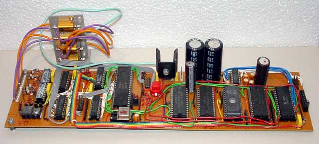

|
|
6502 Pen plotter By Lee Davison. |
|
The basis for this project is an old Apple II pen plotter. Adverts from when this was a current piece of hardware give the price as over £1100 (over $1700) and at the time this was one of the best priced plotters available.It has a single pen and a keypad with UP, DOWN, LEFT and RIGHT buttons plus a switch for PEN UP. There is no position sensing or feedback of any sort from the mechanism, it relies entirely on relative (to the last position) movement and user vigilance.
At first it was my intention to just restore the plotter and use it as it was but the fact that it was almost completely dumb, the host interface was just a logic level mimic of the control panel, and that the driver circuit radiated some milliwatts of RF right up into the VHF band, persuaded me to junk the original circuit and build a new one.

The circuit consists of a 6502, two 32k x 8 RAMs, a 32k x 8 EPROM, a 6551 ACIA with a MAX 232 buffer, a 6840 counter timer, two stepper motor drivers, two 8 bit latches, an 8 bit buffer, an address decoder (GAL16V8A) and is all clocked by a 1.832 MHz oscillator.The use of a GAL for the glue chip allows an almost complete change of the memory map without any circuit changes. This means that changes in address requirements can be accommodated without recourse to the soldering iron. For anyone interested an example set of equations for this chip are in pp.pld and can be compiled with WinCUPL. The fuse file, pp.jed and the compiler listing, pp.txt are also included.

At the back are the motor current limit resistors then, on the board from left to right, are the motor and pen drivers, output latches, input buffer and decoding, CPU and XTAL osc., reset switch and +5V regulator, lower 32k RAM, upper 32k RAM and smoothing caps, 32k ROM and MAX232, 6551 ACIA and more smoothing caps and finally the 6840 counter timer chip.
As can be seen the size, shape and layout of the board were mostly dictated by the space and cable lengths on the plotter chassis.Software.
The software can be thought of as two separate parts, the hardware driver and the command interpreter.Status.The hardware driver.
The hardware driver takes pen movement commands from the buffer queue and outputs the necessary signals to the output drivers. It then sets up a timer event depending on the actions taken and returns control to the command interpreter. If there were no pen movements to be processed the timer is disabled and the hardware driver effectively goes to sleep until woken by the interpreter.The command interpreter.The command interpreter gets commands from the host machine and translates them into discrete pen motions which are sent to the pen movement buffer, it also generates any resulting status or error messages. If, when a pen movement is sent to the buffer, the hardware driver is asleep the interpreter generates the necessary software interrupt to start it. The command interpreter also handles the local controls on the plotter (never implemented).The routines.The software for this project was not completed and during development EhBASIC was used for quick and dirty concept design and testingInitialisation Drawing Calling draw Drawing lines Drawing circles Read, as html, or download the source as a zipped file.
This project is unfinished and will remain that way. Just after I'd got the plot subroutines done and mostly debugged, and could happily draw lines at any angle in any direction and curves of all sorts, I was given a fully working Roland 880 A3 eight pen plotter. It has a higher resolution than this mechanism and is complete and working so, at least as a plotter, this project is unlikely to be developed further.
| Last page update: 28th April, 2002. | e-mail me
 |